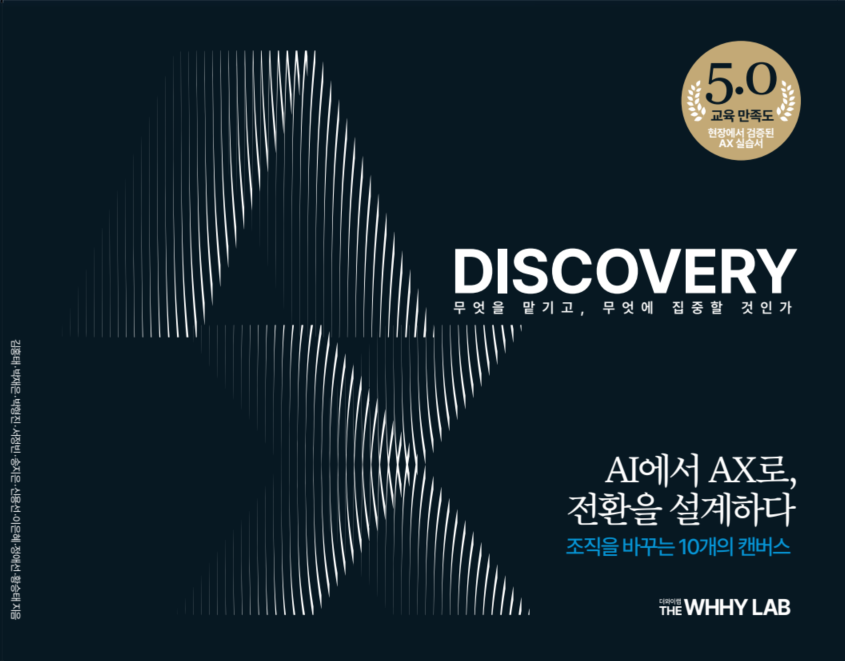
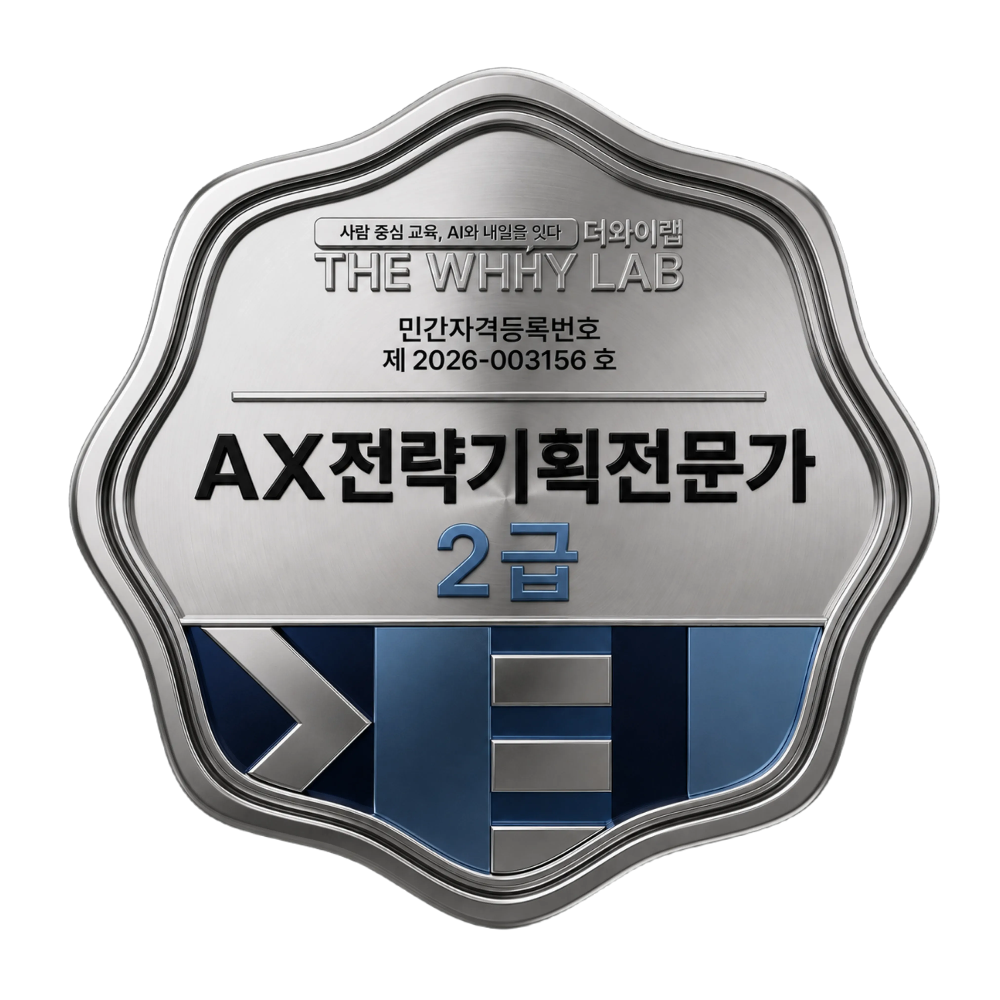
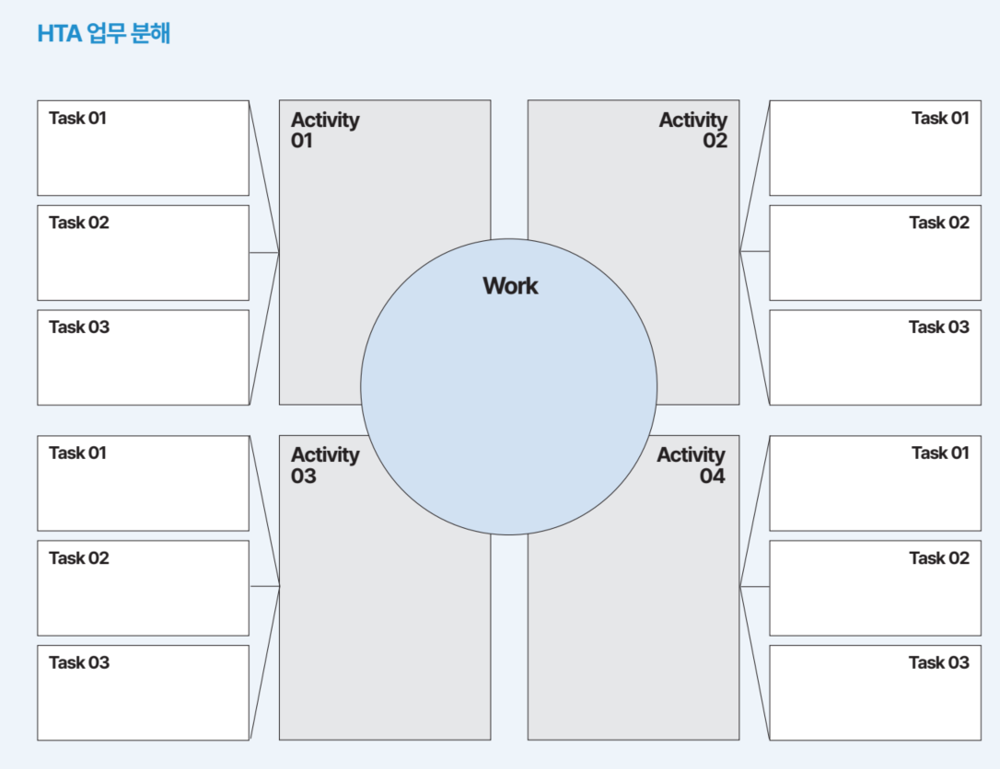
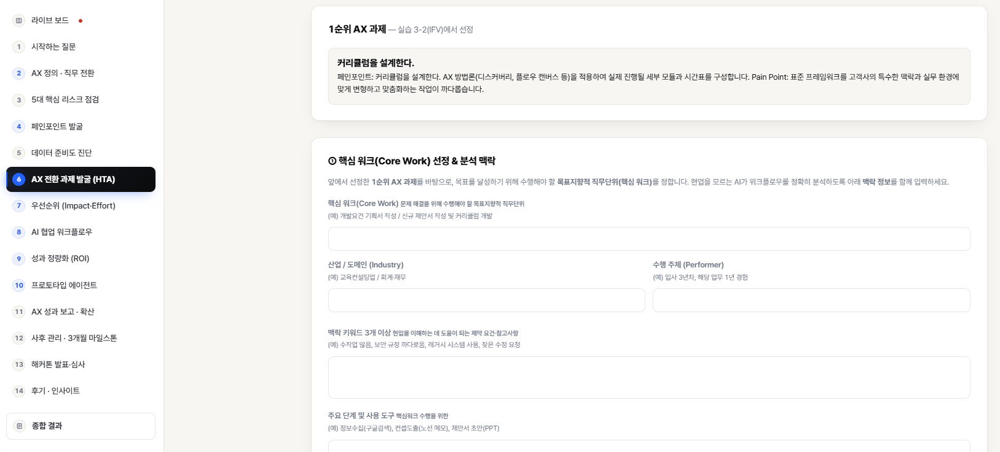
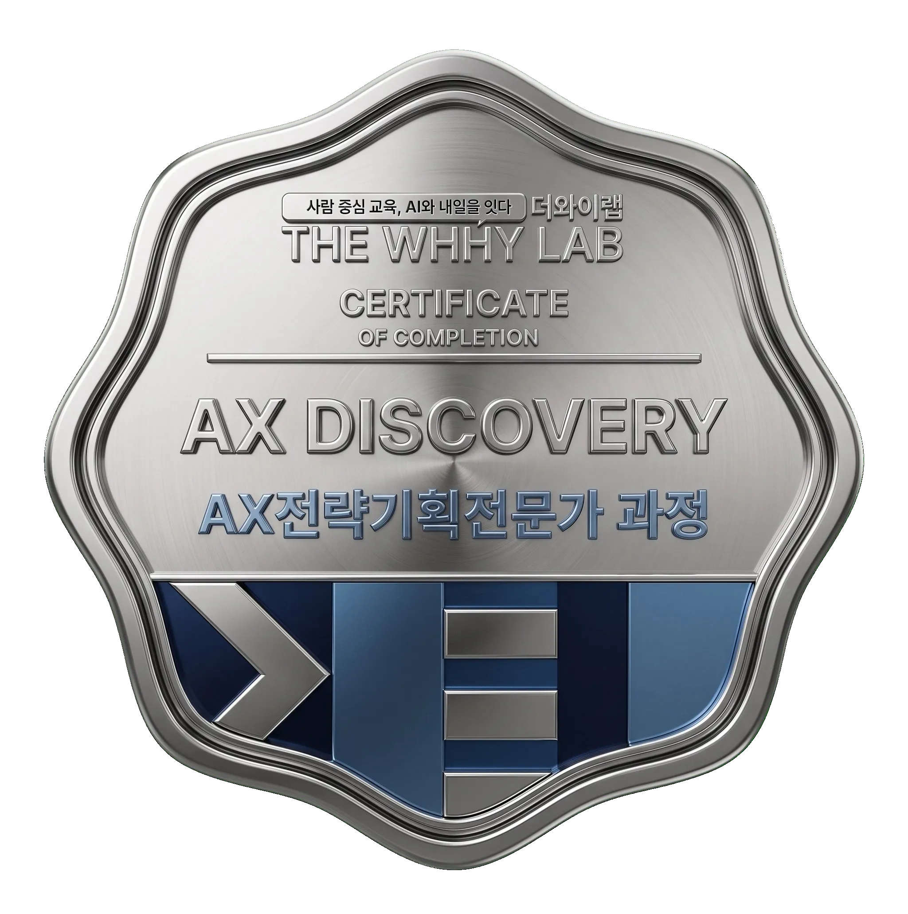

업무를 단계적으로 해체하고 재설계
AX 업무 혁신 프로그램
AI로 일하는 방식을
다시 설계하는
전략적 전환
현업의 실제 업무를 해체하고, AI와 사람이 협업하는 새로운 워크플로우를 설계해 실행 가능한 AX 과제로 전환하는 실전형 프로그램입니다.
추천 대상
- HR·교육 담당자
- AX·DX 추진팀
- 현업 팀장·실무자
- 경영진·사업 리더
하나로 연결된 AX 학습 시스템



자격 취득 가능교육 후 현장에서 활용하는 실행 결과물
줄이기·재배치·가치창출로 이어지는 전환 구조
교재·웹 실습툴·자격증 연계까지,
더와이랩만 갖춘 세 가지
01 자체 출간 교재
더와이랩이 직접 출간한
AX DISCOVERY 교재
10개의 구조화된 캔버스로 현업 업무를 해체하고 AI 협업 흐름을 설계합니다.

02 교재 연동 실습
교재와 연결된
웹 기반 실습 도구
캔버스 작성부터 과제 우선순위 선정까지 실습 과정을 한곳에 기록합니다.

03 전문 자격 연계
AX 전략기획 전문가
자격 취득 가능
과정 이수 후 별도 자격 검정 시험에 응시할 수 있습니다.

— 산출물
교육으로 끝나지 않습니다.
결과물이 현업에서 다시 쓰이는 실행 자산
교육이 끝나는 순간, 참여자의 손에는 현업에서 바로 검토하고 실행할 AX 과제와 설계 문서가 남습니다.
-
01
AX 퀵윈
문제정의서우선 해결할 업무와 목표·범위·기대효과를 정의합니다.
-
02
데이터 준비도
진단서필요 데이터의 출처·품질·활용 가능성을 점검합니다.
-
03
AI 협업
워크플로우기존 업무를 사람과 AI가 협업하는 흐름으로 재설계합니다.
-
04
AI 에이전트
프로토타입핵심 기능과 활용 가능성을 직접 검증하는 초기 구현입니다.
-
05
에이전트
명세서목표·입력·처리·출력·검증 기준을 실행 문서로 정리합니다.
-
06
현장 확산
전략서파일럿 이후 조직 안으로 확산하기 위한 실행 계획입니다.
산출물의 세부 명칭과 범위는 확정 커리큘럼에 맞춰 조정됩니다.
AI 툴을 도입했는데,
왜 성과는 확산되지 않을까요?
부분적인 생산성 향상만으로는 조직 전체의 성과와 새로운 가치로 이어지기 어렵습니다.
특정 부서에서만
쓰입니다
한 사람이나 한 부서의 성공은 전체 업무 흐름을 바꾸기에 힘이 부족합니다.
비용이 함께
늘어납니다
토큰 사용료·전문가 인건비·데이터 관리비가 계속 발생해 절감분을 상쇄합니다.
도구가 빠르게
범용화됩니다
누구나 살 수 있는 도구만으로는 지속 가능한 차별성과 진입장벽을 만들기 어렵습니다.
도구의 문제가 아닙니다.
일하는 방식을 다시 설계해야 합니다.
성과를 내는 조직은
도구보다 일하는 순서를 다시 설계 합니다.
기존 접근
도입부터 시작했을 때의 한계
- 벤더 솔루션 도입실제 업무 흐름과 어긋나 현업이 사용하지 않습니다.
- 컨설팅 진단보고서는 남지만 실행할 주체가 조직 안에 없습니다.
- AI 활용 교육개인 역량은 오르지만 업무 구조는 그대로입니다.
- 1회성 해커톤아이디어는 나오지만 검증과 안착 단계가 없습니다.
성과를 만드는 순서
현업에서 검증하고 개발합니다
- 01도구보다 에이전트로 시작반복 작업이 아니라 업무 흐름 전체를 봅니다.
- 02현업에서 반복 수정사용자의 피드백으로 실행 가능성을 높입니다.
- 03실효성 검증 후 개발효과가 확인된 과제에 자원과 개발을 집중합니다.
100을 10으로 줄이고,
남은 90으로 10배 가치를 만듭니다.
100기존 투입
→
10AX로 줄이기
+
90재배치 자원
→
10×새로운 가치
REDUCE 줄이기
무엇을 100에서 10으로 줄일 것인가- 반복 투입되는 시간과 인력
- 규칙과 패턴으로 처리 가능한 일
- 숙련자의 암묵지에 의존하는 지점
REALLOCATE 재배치
절감한 90을 어디로 보낼 것인가- 미뤄둔 고부가가치 과제
- 고객이 아쉬워했지만 못 하던 일
- 판단·관계·창의가 필요한 업무
REINVENT 재창출
어떤 10배 가치의 새 시장을 열 것인가- 데이터로 만들 수 있는 새 가치
- 구독·데이터 모델로의 전환
- AI 없이는 어려웠던 가치 제안
기본 과정
1단계 · 줄이기 · 8~16시간
심화 과정
2단계 재배치 + 3단계 재창출 · 단계별 각 8~16시간
— 1단계 REDUCE 줄이기
발견에서 확산까지,
하나의 실행 흐름으로 연결합니다.
진단으로 끝나지 않고 현업 과제·워크플로우·AI 에이전트·확산 계획까지 단계별로 완성합니다.
-
01
기반 정렬
AX 전환의 본질과 핵심 리스크를 이해하고 3R 목표를 수립합니다.
3R 목표 수립안 -
02
문제 발견
직무 밸류체인과 페인포인트에서 우선 해결할 Quick Win을 찾습니다.
AX Quick Win 문제정의서 -
03
진단·설계
데이터 준비도와 전환 효과를 진단해 AI 협업 워크플로우를 설계합니다.
데이터 진단·협업 워크플로우 -
04
정량화·구현
KPI와 ROI 목표를 정하고 가설검증용 AI 에이전트를 구현합니다.
AX ROI 목표·AI 에이전트 -
05
검증·확산
현업 피드백으로 보완하고 재현 가능한 확산 체계를 만듭니다.
에이전트 명세·확산 전략
— 2단계 REALLOCATE 재배치
확보한 자원을,
고부가가치 업무로 재배치합니다.
1단계에서 확보한 자원을 기반으로 고부가가치 업무를 발굴하고, 인간과 AI의 협업 프로세스와 AI 에이전트를 설계해 핵심역량 전환과 성과향상 방안을 구체화합니다.
-
01
재투입 과제 발굴
1단계 성과를 검토하고, 고부가가치 업무와 미뤄둔 과제를 탐색해 실행 가능성과 우선순위를 정합니다.
핵심역량 전환·성과향상 과제 -
02
프로세스 설계
고객·사용자와 핵심 요구를 정의하고, 고부가가치 워크프로세 재설계와 실행 시나리오를 설계합니다.
성과향상 AI 에이전트 -
03
검증과 확산
에이전트를 시연·보완하고 명세서를 작성해 조직 확산 일정과 지원 체계를 수립합니다.
에이전트 명세서·성과향상 AX 확산전략 보고서
— 3단계 REINVENT 재창출
신규가치 창출 과제를 발굴하고 검증해,
실제 개발 가능한 수준까지 구체화합니다.
AI 기반 신규가치 과제를 발굴하고 시장·고객·10배 가치가설을 검증해, AI 에이전트와 실제 개발 요구사항까지 고도화합니다.
-
01
기회 발굴
데이터 기반 신규 제품·서비스와 기존 제품의 가치 확장 기회를 탐색하고 목표시장·고객과 10배 가치제안을 설계합니다.
신규 가치 창출 과제 -
02
가설 수립
인터뷰·설문·테스트로 시장성과 고객 반응 가설을 세우고 데이터·기술·파트너·조직 역량을 점검합니다.
고객·시장 검증계획서·사업화 체크리스트 -
03
검증과 보완
검증 결과를 정성·정량 데이터로 리뷰해 채택·수정·기각하고 동료 피드백으로 과제를 보완합니다.
고객·시장 검증 결과표·신규가치 창출 중간보고서 -
04
고도화와 발표
현장 확산 결과를 반영해 AI 에이전트와 개발 요구사항을 고도화하고 최종 발표·심사를 진행합니다.
실제 개발을 위한 PRD·최종 발표자료
현업 구성원이 확인한,
AX DISCOVERY의 변화
S그룹·H그룹·C그룹 등 주요 대기업 계열사와 공공기관 현업 구성원의 평가입니다.
- 교육 전반 만족도
- 4.9 / 5.0
- 동료·지인 추천 의향
- 100%
- 강사 강의 만족도
- 5.0 / 5.0
- 현업 적용 자신감
- 98%
01“워킹 플로우와 일하는 방식 자체를 다시 정의했습니다.”업무를 단계별로 나누고 AI 에이전트로 연결하면서 큰 업무 흐름도 전환할 수 있음을 확인했습니다.
02“막연했던 AI 활용을 실행 가능한 AX로 구체화했습니다.”워크플로우 분석을 통해 문제의 방향과 AX 추진 과제를 구체화할 수 있었습니다.
03“생산성을 높이고 원가를 절감할 수 있었습니다.”효율화 가능성이 높은 업무를 발굴하고 KPI부터 워크플로우까지 재설계했습니다.
04“AI 에이전트 프로토타입을 직접 만들어서 좋았습니다.”직접 실습하며 실제 업무에도 적용할 수 있다는 자신감을 얻었습니다.

AX DISCOVERY— 도입·문의
AX는 조직의 전략이자,
개인의 실행 역량입니다.
AX 과제를 주도할 수 있는
내부 실행력
- 현업 페인포인트를 AX 과제로 구조화
- 업무 프로세스의 AI 전환 설계
- AI 에이전트 프로토타입 제작
내 직무에 AI 전환을
직접 적용하는 역량
- 도구 사용자를 넘어 워크플로우 설계자로 전환
- 반복 업무에서 해방되는 시간
- 실물 산출물과 자격·디지털 배지 연계
도입 상담 및 제안 요청
우리 조직의 AX 과제를
함께 설계해보세요.
- 전화번호
- 02-468-3555